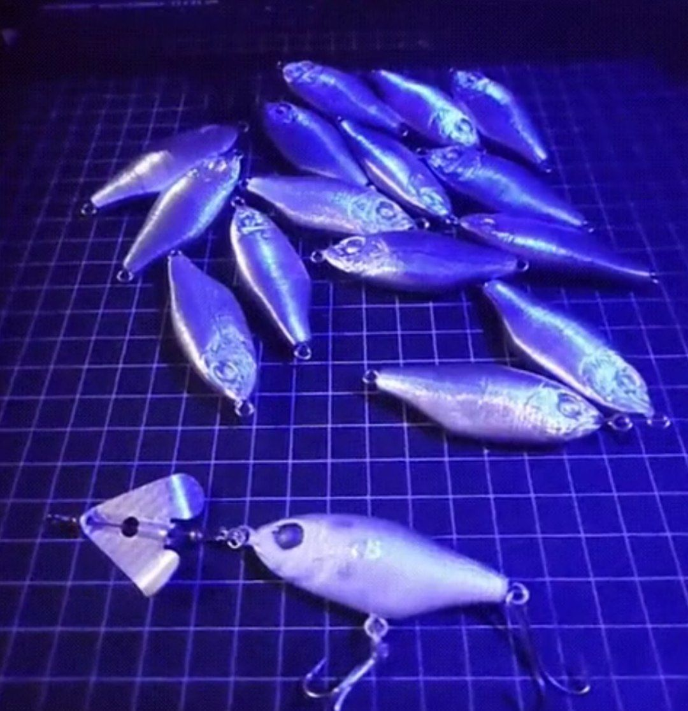

¿Qué vas a imprimir hoy?
Explorá ideas para imprimir con tu impresora FDM. Desde gadgets útiles hasta diseños divertidos.

¡Descargá el Señuelo Mojarra!
Ideal para pesca variada. Diseño 3D listo para imprimir y usar.
Modelos útiles, creativos y listos para imprimir
Explorá ideas para imprimir con tu impresora FDM. Desde gadgets útiles hasta diseños divertidos.
Ideal para pesca variada. Diseño 3D listo para imprimir y usar.